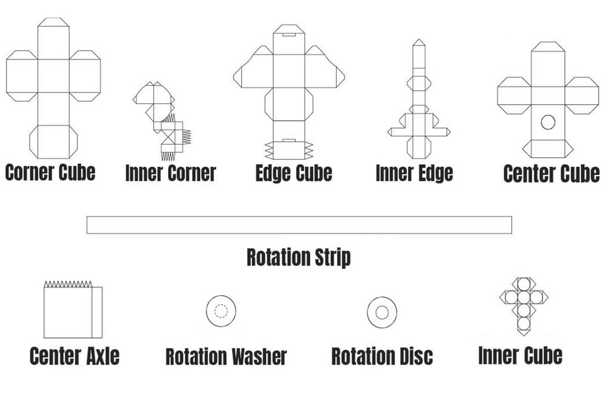
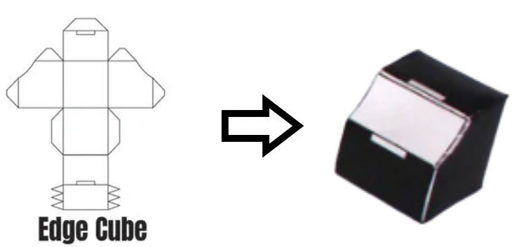

Home
About Us
Contact
Language
<
Italiano
Deutsch
English
DOWNLOAD
Il mio progetto:
Creare un cubo di Rubik con la carta
Istruzione:
1.Prima di tutto dobbiamo stampare il pdf e tagliarlo.
Download
*Dopo aver tagliato tutti i fogli otteniamo vari figure tra cui:

6 Corner Cube 8 Inner Corner
12 Edge Cube 12 Inner Edge
6 Center Cube 6 Center Axle
6 Rotation Washer 6 Rotation Disc
1 Inner Cube
2. Ora dobbiamo incolare tutte le figure e otteniamo questi solidi:

3. Infine dobbiamo assemblare tutti i pezzi